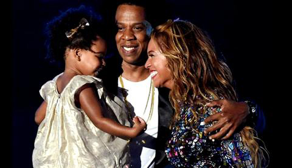
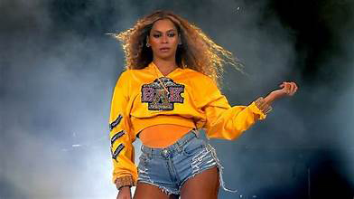

But first things first, check out her socials Beyonce Instragram.
Check out this really, cool picture of her and her family.
Click this link to go to her family tree.
At the age of nine, Beyonce formed the group called Destiny's Child. This was an all girls group with her childhood friends. Beyonce started the group in 1990 but eventually went solo in 2003 wuth her first solo ablum called Dangerously In Love.
Check out the list from Billboard on Beyonce's top 10 songs. #1: Ed Sheeran and Beyonce, "Perfect" #2: Destiny's Child, "Independent women part 1" #3: Beyonce, "Irreplaceable" #4: Beyonce feat. Seanpaul, "Baby boy" #5: Beyonce feat. Jay-Z, "Crazy In Love" #6: Beyonce feat. Bun B & Slim thug, "Check on it" #7: Beyonce, "Single ladies" #8: Destiny's Child, "Jumpin, Jumpin" #9: Destiny's Child, "Say my name" #10: Destiny's Child, "Lose my breath"
Beyoncé’s ‘Renaissance’ Film Coming to Movie Theaters